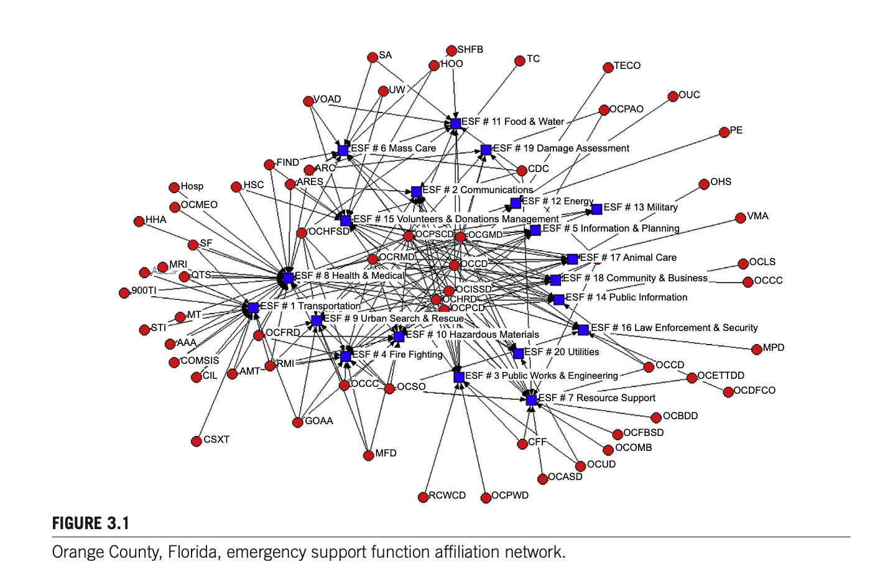
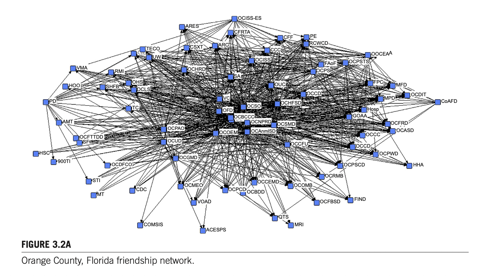
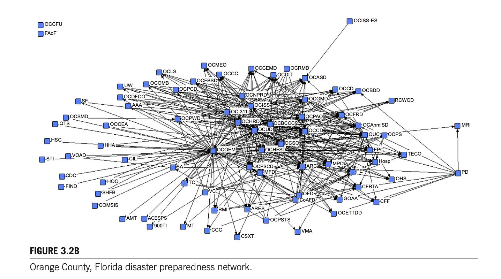
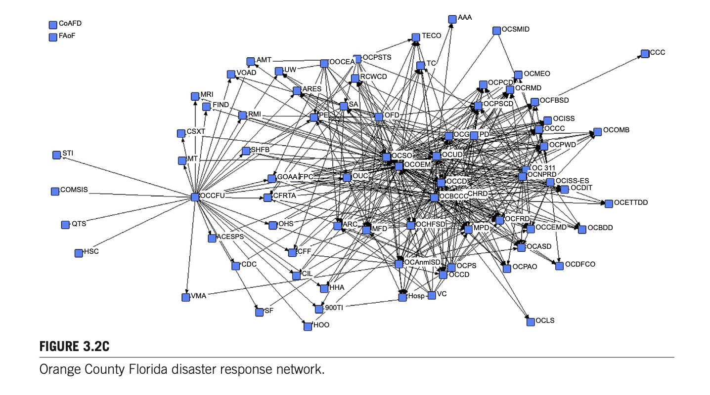
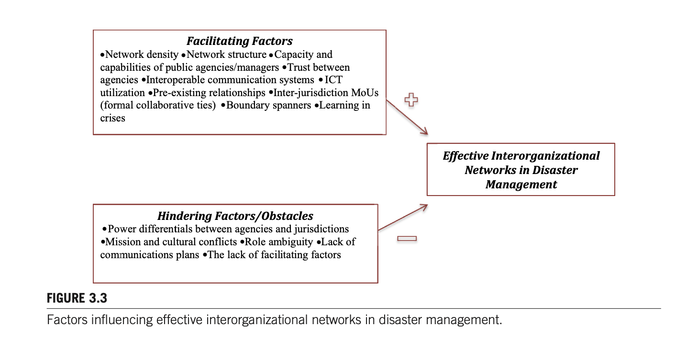
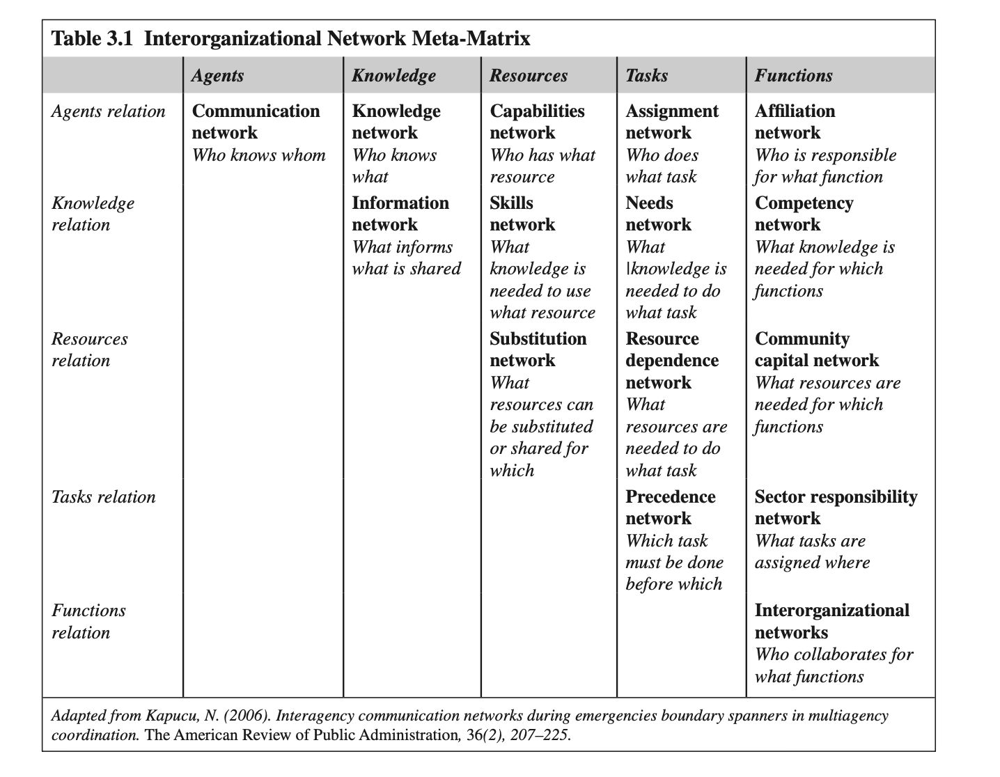

서론 (Introduction)
제3장 원문의 Introduction(서론) 섹션(25~26페이지)에 해당하는 주요 내용은 다음과 같이 정리할 수 있습니다:
1. 재난의 복잡성과 조직 간 네트워크의 필연성
Norm of Disaster Mgmt- 재난의 본질과 대중의 기대: 재난은 복잡하고 다루기 까다로운(challenging) 상황이며, 사람들은 대체로 정부가 신속하고 효과적으로 문제를 해결해 줄 것이라 기대합니다.
- 일상적 응급상황과의 본질적 차이: 파괴적인 대형 재난(catastrophic disasters)을 관리하는 것은 일상적인 응급 상황을 처리하는 것과는 근본적으로 다릅니다. 극단적 사건(extreme events)은 특정 지역에서 비교적 드물게 발생하지만, 발생 시 사회 전체에 막대한 혼란을 초래합니다.
- 재난관리의 표준으로서의 네트워크: 대형 재난을 성공적으로 관리하려면 수평적·협력적인 관계망 속에 있는 다수의 이해관계자(multiple stakeholders)만이 제공할 수 있는 광범위한 기술(skills)과 자원이 요구됩니다. 따라서 조직 간 네트워크는 재난 대응에서 예외가 아닌 하나의 '표준(norm)'입니다.
2. 행정 서비스 전달 체계의 전환
Governance Shift- 공공 부문 전반의 추세: 조직 간 네트워크의 혜택을 받는 정부 영역은 재난관리뿐만이 아니며, 보건의료(health care)부터 사회복지 서비스에 이르기까지 광범위한 서비스가 분야 간(cross-sector) 네트워크와 파트너십을 통해 제공되고 있습니다.
- 관료제에서 파트너십으로의 이행: 공공 서비스 전달 체계가 전통적인 계층제 관료제(직접 정부, direct government)에서 분야 간 파트너십으로 전환된 점은 재난관리 내 네트워크의 입지에 결정적인 영향을 미쳤습니다.
- 네트워크 동학의 이해: 재난 전(before), 재난 중(during), 재난 후(after)에 네트워크가 어떻게 설계(designed)·형성(developed)되고 작동(function)하며 진화(evolve)하는지를 이해하면 네트워크 활용 시 더욱 우수한 재난관리 성과를 달성할 수 있습니다.
3. 자연발생적 네트워크와 협력
McGuire & Silvia (2010)- 협력 욕구와 자연발생적 네트워크: 재난은 이타적 행동(altruistic behavior)과 협력의 필요성이 두드러지는 환경을 조성하므로, 극심한 스트레스 상황을 처리하는 과정에서 네트워크가 자연발생적으로 형성되기도 합니다(효과성 여부는 별개의 문제).
- 정부 역량의 한계와 민간·비영리 부문 협력: 재난관리는 모든 정부 계층(연방, 주, 지방)의 노력을 필요로 하지만, 대형 재난을 해결하기에 정부 자체의 역량과 자원은 대체로 부족하므로 민간 및 비영리 조직과의 협력이 필수적입니다.
- 네트워크 연구의 최적 맥락: 다수준(multilevel), 다부문(multisector), 협력적(collaborative) 성격을 띠는 재난관리는 네트워크를 연구하기에 가장 이상적인 맥락을 제공합니다 (McGuire & Silvia, 2010).
4. 제3장의 목적 및 구성 체계
Purpose & Outline연구 목적: 본 장은 재난 대응 및 복구 단계에서 나타나는 조직 간 네트워크에 대한 이론적 개관(theoretical overview)을 제공하고, 다층적 네트워크와 다양한 부문 간 기관들이 참여하는 중층적(layered) 기능으로서의 재난관리를 개괄합니다.
| 구성 순서 | 핵심 다룸 주제 |
|---|---|
| 제1부 | 재난관리 분야를 포함한 조직 간 네트워크에 대한 간략한 역사적 관점 제시 |
| 제2부 | 조직 간 네트워크의 다양한 유형과 협력적 응급관리 맥락에서의 활용 설명 |
| 제3부 | 재난 시 기관 간 효과적인 협력을 촉진하는 요인(facilitating factors)과 저해하는 요인(hindering factors)을 탐색하는 기본 틀(framework) 개발 및 제시 |
INTERORGANIZATIONAL NETWORKS (조직 간 네트워크)
제공해주신 본문(CHAPTER 3: INTERORGANIZATIONAL NETWORKS 섹션, 26페이지)의 주요 내용을 원문에 충실하게 핵심별로 요약·정리한 내용은 다음과 같습니다:
1. 정책 집행에서 네트워크의 부상과 역사적 배경
- 정책 집행에서의 중요성 증대: 정책 집행(policy implementation) 과정에서 네트워크의 중요성이 점차 커지고 있습니다.
- 개념적 새로움과 실질적 존재: 네트워크라는 '용어'의 사용은 비교적 최근의 일이지만, 미국 정부 체계 내에서 네트워크 현상 자체가 완전히 새로운 것은 아닙니다.
- 예를 들어, 정부 간 관계(intergovernmental relationships)나 정부의 서로 다른 부처·분과(branches) 간의 관계도 하나의 네트워크 형태로 볼 수 있습니다.
- 오늘날의 네트워크(부문 간 관계): 오늘날 미국 정부 체계에서 네트워크는 주로 '부문 간 관계(intersector relations)'를 지칭합니다.
2. 관료제 축소와 비국가 행위자 역할 확대
- 전통적 관료제의 후퇴와 보완: 정책 집행 및 공공 서비스 전달 체계에서 전통적인 관료제가 축소되고 뒤로 물러남에 따라, 비국가 행위자(nonstate actors)들이 네트워크 구조 안에서 작동하며 관료제를 보완하고, 어떤 경우에는 대체하기까지 합니다.
- 이러한 변화를 보여주는 주요 지표(Indicators):
- 민영화 (privatization)
- 서비스의 외주화/민간위탁 (contracting out services)
- 비영리 부문의 성장 (growth of nonprofit sector)
- 복잡한 문제 해결을 위한 파트너십 구축 (creation of partnerships for solving complex problems)
3. 조직 간 네트워크의 분류 기준
Kapucu, Hu, & Khosa (2014)조직 간 네트워크 문헌(Kapucu, Hu, & Khosa, 2014)에 따르면, 네트워크는 다음 세 가지 기준에 따라 다양한 유형으로 분류됩니다:
- 기능 방식 (how they function)
- 달성하고자 하는 목표의 성격 (what kind of goals they try to accomplish)
- 조직화 방식 (how they organize)
4. 네트워크의 형성 방식: 자발적 vs 의무적
- 자발적 형성 (Voluntary): 어떠한 강압이나 특정 인센티브 없이 조직들이 자발적으로 파트너십에 참여하는 형태입니다.
- 상위 정부에 의한 의무적 형성 (Mandated): 상위 정부 기관의 요건에 의해 강제적으로 형성되는 형태입니다.
- 대표적 사례 (미국 FEMA): 미국 연방재난관리청(FEMA)은 지방 응급관리 기관들이 특정 연방 지원금을 받기 위해 국가대응체계(National Response Framework)와 국가재난복구체계(National Disaster Recovery Framework)를 자체 계획에 반영하도록 요구합니다.
- 이러한 공식 체계(Frameworks)들은 응급관리 기관들이 분야 간 파트너십(cross-sector partnerships)과 협력을 구축하도록 의무화하고 있습니다.
INTERORGANIZATIONAL NETWORKS IN DISASTER MANAGEMENT
제시된 본문(INTERORGANIZATIONAL NETWORKS IN DISASTER MANAGEMENT, 26~27페이지)의 주요 내용을 핵심 주제별로 빠짐없이 정리한 내용은 다음과 같습니다:
1. ‘총체적 공동체’ 접근법과 재난 복원력
- 총체적 공동체 접근법의 도입: 최근 미국의 비상관리 체계는 ‘총체적 공동체(whole community)’ 접근법을 기반으로 개발되어 운영되고 있습니다.
- 단일 주체의 한계: 재난은 매우 복잡한 문제이므로 단일 기관이나 단독 행위자가 독자적으로 해결하거나 관리할 수 없으며, 정부 기관뿐만 아니라 비정부기구(NGO) 및 일반 시민의 참여가 필수적입니다.
- 공동체 재난 복원력(Community Disaster Resilience): 재난은 통상적인 공무원 집단의 한정된 자원만으로 처리할 수 없다는 동일한 맥락에서 출발합니다.
- 협력과 도약(Bouncing Forward): 지역사회가 함께 협력하여 사회적·물리적 취약성을 낮추고, 자원을 공유하며, 비공식 네트워크를 활용함으로써 재난의 영향을 최소화하고 재난 이후 더 나은 상태로 도약(bouncing forward)해야 합니다.
- 취약성의 지속적 증가 요인: 공동체가 진화함에 따라 이민자 유입, 취약계층(노인, 장애인, 미성년자)의 증가, 그리고 기후변화와 같은 위험 요소의 변화로 인해 지역사회의 위험 수준과 위험 유형이 계속해서 증가합니다.
2. 재난 복원력의 정의와 구성요소
Norris et al. (2008)- 복원력의 정의: 노리스와 동료들(Fran Norris et al., 2008)은 복원력을 개인 및 조직 자원을 포함한 지역사회 자원을 일련의 ‘적응 역량(adaptive capacities)’과 연결하는 과정으로 정의합니다.
- 주요 구성요소: 지역사회 자원과 적응 역량에는 사회적 자본(social capital), 조직 네트워크, 인적 자본, 경제 개발 동학, 지역사회 역량이 포함됩니다.
- 네트워크의 구축 주체: 응급관리 목적의 지역사회 내 조직 간 네트워크는 주로 비상관리기관, 보안관실, 보건부 등 응급관리 조직들에 의해 구축되고 유지됩니다.
3. 비상관리 단계별 네트워크의 특성과 기능적 차이
- 전 단계에서의 작동 요구: 네트워크는 비상관리의 전 단계(대비 preparedness, 완화/예방 mitigation, 대응 response, 복구 recovery)에서 작동해야 하지만, 각 단계마다 상이한 목표를 달성하기 위해 서로 다른 조직들의 협력이 요구됩니다.
- 대응(Response) 네트워크의 특성:
- 비교적 짧은 기간 동안 즉각적이고 동시적인 상호작용에 의존합니다.
- 의사결정 지원 시스템과 네트워크 연결망을 통한 지속적이고 신속한 정보 흐름이 핵심입니다.
- 완화(Mitigation) 네트워크의 특성:
- 홍수 보험, 건축 규정 적용, 고위험 지역 주민 이주 등 법률과 규정을 집행하기 위해 수십 년에 이르는 장기적인 조직 간 협력을 요구합니다.
- 플로리다주 카운티 완화 전략 사례 (Local Mitigation Strategies, LMS):
- 자연재해 및 인위적 재난의 영향을 최소화하기 위해 지역 완화 전략(Local Mitigation Strategies)을 수립·운영합니다.
- 이는 지역 경제 개발 계획, 종합 비상관리 계획, 업무연속성 계획(COOP)과 연계되어 수립됩니다.
- 주요 활동으로 대주민 공공 교육 및 홍보, 연방 보조금을 통한 핵심 시설물 보강, 엄격한 건축 규정 시행 등이 포함되며, 필요한 경우(특히 경제 개발 분야) 민간 부문 파트너도 참여합니다.
4. 신뢰 구축의 시간성과 임시 참여자(Ad hoc Participants)의 한계
- 신뢰와 조화의 축적 필요성: 대응, 복구, 완화 등 모든 형태의 조직 간 네트워크는 참여자 간의 신뢰(trust), 상호운용성(interoperability), 조화(harmony)를 형성하기 위해 상당한 시간과 노력을 필요로 합니다.
- 단기 대응 네트워크의 역설: 비록 실제 재난 현장에서 단 몇 시간만 가동되는 대응 네트워크라 할지라도, 성공적인 작동을 위해서는 참여자들 간에 사전에 축적된 오랜 파트너십의 역사가 뒷받침되어야 합니다.
- 임시 참여자의 역할과 위험성: 임시 참여자(ad hoc participants)와 자발적 조력자(helpful bystanders)는 정보 제공, 새로운 연결 구축, 구호 활동 지원 등 재난관리에 일정한 기여를 합니다.
- 조정과 책임성 부재의 결과: 그러나 이러한 임시 참여자들에게 체계적인 조정(coordination)과 책임성(accountability)이 결여될 경우 쉽게 현장의 혼란을 초래하며, 공식 네트워크 행위자들의 성공적인 대응 활동을 저해할 수 있습니다.
NETWORKS OF NETWORKS: MULTILAYERED DISASTER NETWORKS
제공해주신 본문(NETWORKS OF NETWORKS: MULTILAYERED DISASTER NETWORKS, 27~29페이지)의 주요 내용을 핵심 주제 및 정부 수준(수직적·수평적 차원)별로 빠짐없이 정리한 내용은 다음과 같습니다:
1. ‘네트워크의 네트워크(Networks of Networks)’ 개념 및 기본 구조
Waugh (2003)- 하위 네트워크들의 총합: 선진국의 재난관리 체계는 수많은 기관에 의존하며, 국가 전체 네트워크는 다양한 하위 네트워크(subnetworks)들의 결합으로 구성됩니다.
- 포함 주체:
- 연방 수준의 국가 기관(FEMA 등)
- 주 및 지방/지역 수준의 비상관리 기관
- 1차 현장 대응 기관(소방서, 경찰서, 수색구조대 등)
- 비영리 및 민간 단체(적십자사, 시민단체, 종교단체 등) (Waugh, 2003)
2. 국가 수준(National Level)의 네트워크
Jordan (2010)- 범정부·비정부 협력 지침: 미국에서는 국가대응체계(NRF)와 국가사건관리체계(NIMS)가 다양한 정부 계층과 비정부 주체들이 협력하도록 안내하는 기준 역할을 수행합니다.
- 국가 자금 지원을 통한 협력 촉진 (UASI): 미 국토안보부(DHS)의 도시지역 안보 이니셔티브(UASI: Urban Area Security Initiative)는 지역 협의회와 실무그룹 네트워크를 구축하여 지역사회의 대응 역량과 대비 계획을 발전시키도록 보조금을 지원합니다.
- 자금(Funding) 중심의 협력 동기: Alexandra Jordan(2010)의 연구에 따르면, UASI는 도시와 주변 지역(교외 및 농촌) 기관들을 협력으로 이끄는 역할을 하지만, 주된 동기는 자금 확보에 있습니다.
- 권력 불균형(Power Imbalances): 대도시권은 많은 인구와 자산을 보호하기 위해 더 큰 몫의 자금을 요구하고, 소규모 지역은 재난 시 대도시의 자원에 의존합니다. 따라서 이러한 협력은 "공통의 지역적 필요에서 출발한 것이 아니라 도시, 농촌, 교외 공동체 간의 권력 불균형에서 비롯된 것"으로 분석됩니다.
3. 주/도 수준(State Level)의 수평적 파트너십: EMAC
Kapucu, Augustin, & Garayev (2009)- 비상관리상호지원협정(EMAC: Emergency Management Assistance Compact): 재난 시 주(State) 간에 자원, 장비, 정보, 인력을 원활하게 공유하도록 돕는 미국의 전국 단위 ‘주 간 상호 원조 협정’입니다.
- 효과성(허리케인 카트리나 & 리타 연구): Kapucu, Augustin, & Garayev(2009)는 EMAC과 같은 주 간의 수평적 파트너십과 네트워크가 행정적 감독(oversight)을 제공하고, 재난 대응 시 신속한 문제 해결을 위한 자원 및 기술을 동원하는 데 필수적임을 규명했습니다.
4. 지방 및 카운티 수준(Local & County Levels)의 네트워크와 3가지 구조
Kapucu & Garayev (2014)- 지역 네트워크의 자원 동원력: 최초 대응자, 비상운영센터(EOC), 지역 비영리단체 등으로 구성되며, 전통적인 명령통제(command-and-control) 방식에서는 소외되기 쉬운 핵심 민간 기업과 지역사회 조직의 자원에 접근할 수 있게 해줍니다.
- 지방 재난대응 네트워크의 3가지 유형 (Kapucu & Garayev, 2014):
- 수평적/탈중앙형 (Horizontal / Decentralized): 긴급지원기능(ESF: Emergency Support Function) 시스템에 기반한 구조.
- 수직적/계층형 (Vertical / Hierarchical): 미국의 대표적 현장 대응 전략인 사고현장지휘체계(ICS: Incident Command System)에 기반한 구조.
- 혼합형 (Hybrid): ESF와 ICS 체계가 결합된 형태.
- 플로리다주 오렌지 카운티(Orange County) 사례: 종합 비상관리 계획에 ESF 체계를 적용하여, 재난 시 특정 지원 기능을 수행할 1차(주관) 기관과 2차(지원) 기관을 지정·운영합니다. (본문의 Figure 3.1은 사각형으로 표시된 기능군을 중심으로 원형의 참여 기관들이 클러스터를 이루는 친화 네트워크를 시각화함).

5. 재난 대응 네트워크의 특수 동학과 한계 (29페이지)
Nowell & Steelman (2014)- 자연발생적 성격 (Emergent Nature): 재난 대응 네트워크는 사전에 계획된 것보다 현장에서 새롭게 형성·발현(emergent)되는 경향이 강합니다. 비록 이전 관계와 완전히 무관할 수는 없으나, 재난 현장의 실무자들은 사전에 마련된 제도적 배치를 그대로 따르기 어려운 경우가 많습니다 (Nowell & Steelman, 2014).
- 계층제의 한계와 적응성: 재난의 혼란스럽고 불확실한 특성 때문에 하향식(top-down) 명령 체계나 표준운영절차(SOP)는 일정 한계까지만 작동하며, 환경 변화에 유연하고 적응적(flexible and adaptable)이어야 합니다.
- 상황 적합성: 일반 공공 서비스 전달에서 효과적인 특정 구조(예: 중앙집권적 구조)라 하더라도 모든 재난 상황에서 긍정적인 성과를 보장하는 것은 아니므로, 네트워크 효과성을 평가할 때는 재난의 특수한 동학을 반드시 고려해야 합니다 (Raab et al., 2015).
EFFECTIVE INTERORGANIZATIONAL DISASTER NETWORKS
제공해주신 본문(EFFECTIVE INTERORGANIZATIONAL DISASTER NETWORKS, 29~31페이지)의 주요 내용을 핵심 이론, 선행 연구 및 실증 분석별로 빠짐없이 정리한 내용은 다음과 같습니다:
1. 네트워크 효과성(Network Effectiveness)의 정의와 평가의 한계
Provan & Kenis (2008)- 네트워크 효과성의 정의: 프로반과 케니스(Provan & Kenis, 2008)에 따르면, 네트워크 효과성은 "개별 조직 참여자들이 독립적으로 행동해서는 통상적으로 달성할 수 없는, 긍정적인 네트워크 수준의 성과를 달성하는 것"으로 정의됩니다.
- 전통적 관료제와의 차이점 및 평가의 어려움:
- 전통적 관료제는 명확하고 비교적 경직된 구조를 지닌 반면, 네트워크는 복잡하고 모호하며 유동적인(fluid) 구조를 갖습니다.
- 따라서 단일 기관을 위한 전통적인 성과 관리 도구로는 네트워크의 효과성과 성과를 측정할 수 없습니다.
2. 투리니 등(Turrini et al., 2010)의 메타분석: 효과성의 3수준과 3대 결정요인
93편 논문 검토Keith Provan과 Brinton Milward(1995)의 연구 이후 출간된 93편의 관련 논문을 검토하여 네트워크 효과성의 수준과 결정요인을 도출했습니다.
가. 네트워크 효과성 평가의 3개 수준 (Levels)
- 수혜자/클라이언트 수준 (Client-level): 최종 결과에 대해 수혜자가 만족하는지 여부
- 지역사회 수준 (Community-level): 지역사회가 네트워크의 운영으로부터 실질적인 혜택을 얻고 있는지 여부
- 네트워크 수준 (Network-level): 명시된 목표의 달성 역량, 네트워크의 지속 가능성 및 실행 가능성(viability), 혁신과 변화 역량
나. 네트워크 효과성의 3대 포괄적 결정요인 (Determinants)
- 1. 구조적 특성 (Structural characteristics):
- 외부 통제(이해관계자/유권자에 대한 의존성)
- 통합 메커니즘(공통 통신 시스템 구축, 서비스 전달 시너지 창출)
- 네트워크 규모 및 구성
- 공식화 및 책임성(공식 규칙·기능 마련, 자금 지원자 등 외부 이해관계자에 대한 책임성)
- 내부 안정성(참여 인력의 안정성)
- 2. 기능적 특성 (Functioning characteristics):
- 네트워크 내부의 ‘관리 기술(management craft)’
- 전통적인 관리 작업, 일반적 네트워킹, 불안정성 완화(buffering) 및 안정성 육성, 네트워크 프로세스 조율·지휘(steering)
- 3. 맥락적 특성 (Contextual characteristics):
- 네트워크가 작동하는 환경
- 환경의 안정성(Stability)이 핵심 요인이며, 환경적 안정성은 네트워크 효과성을 특정 지점까지는 향상시키지만 그 임계점을 넘어서면 오히려 저해할 수 있음.
3. 재난 대응 네트워크의 특수 동학과 도전 과제
- 자연발생적 성격 (Emergent Nature): 재난 대응 네트워크는 계획된 구조보다 현장에서 자연발생적으로 형성되는 경향이 훨씬 강합니다. 기존 관계와 완전히 단절되지는 않더라도, 현장 대응자들은 사전에 마련된 제도적 배치를 따르기 어려운 경우가 많습니다 (Nowell & Steelman, 2014).
- 계층적 구조의 한계와 유연성: 재난의 혼란스럽고 불확실한 특성 때문에 하향식(top-down) 메커니즘과 표준운영절차(SOP)는 일정 수준까지만 유효하며, 참여자들의 유연성과 환경 적응성이 필수적입니다.
- 상황 적합성: 일반 행정 서비스 전달(예: 중앙집권적 구조)에서 효과적인 네트워크 구조라 하더라도 모든 재난 상황에서 긍정적인 성과를 내는 것은 아닙니다 (Raab et al., 2015).
4. 재난 네트워크 효과성에 관한 주요 실증 연구들
- 연구 초점: 산불 대응 통신 네트워크를 형성하는 요인으로서 제도적 매몰성(institutional embeddedness)과 관계적 매몰성(relational embeddedness)의 영향을 분석.
- 핵심 결과: 참여자 간의 친숙도(familiarity)를 뜻하는 관계적 매몰성(재난 전 사회적 유대, 공통 이해관계 소속, 공유된 기능적 역할)이 산불 통신망 형성을 유의미하게 예측했습니다. 제도적 매몰성은 네트워크 밀도와 참여자 간 빈번한 의사소통에 기여하는 것으로 부분 확인되었습니다.
- 연구 배경: 중심적인 주도 기관(leading central organization)이 존재할 때 네트워크 효과성이 높아진다는 Provan & Milward(1995) 모형을 기반으로 연구를 수행했습니다.
- 비교 분석 3차원: 플로리다 델타 카운티 비상대응계획의 긴급지원기능(ESF)을 대상으로 ① 계획서상 주관 기관, ② 참여자들이 인지한 가장 영향력 있는 기관, ③ 실제 네트워크 위치(최고 중심성 기관)를 상호 비교했습니다.
- 인지적 정확성의 4가지 유형:
- 유형 I (가장 일관됨, Type I): 계획, 참여자 인지, 실제 네트워크 중심 기관이 3자 모두 완벽히 일치.
- 유형 II 및 III (부분적 일관성, Types II & III): 계획과 인지, 또는 인지와 실제 네트워크 등 두 가지 수준에서만 주도 기관이 일치.
- 유형 IV (비일관형, Type IV): 세 가지 차원 모두에서 주도 기관이 불일치.
- 의의: 비상관리자들이 실제 현장에서 작동하는 네트워크의 운영 현실을 얼마나 명확히 파악하고 있는지를 진단하는 유용한 도구입니다.
- 산불 대응망 내 가교 행위자(Bridging Actors) 식별 연구:
- 유사성 가설 (Similarity / Homophily thesis): 사람들은 자신과 유사한 주체(예: 지방 소방대와 연방 토지관리국 등)를 가교자로 선택할 것으로 봄.
- 비유사성 가설 (Dissimilarity thesis): 가교 행위자는 친숙함이 아니라 운영상의 우선순위(operational priorities)에 따라 형성된다고 봄.
- 핵심 결론: 유사성과 친숙함은 사람들이 비상 상황에서 '어떻게 조직될 것인가'라는 사전 기대는 예측하지만, 실제 현장 네트워크 구조는 다르게 형성됩니다. 즉, "실제 실행(practice)에서는 비유사성 가설이 유사성 가설보다 더 큰 설득력을 갖는다"는 점을 입증했습니다.
COMMUNICATION (의사소통)
제3장의 COMMUNICATION(의사소통) 섹션(31~34페이지)의 주요 내용을 원문에 충실하게 정리한 내용은 다음과 같습니다:
1. 불확실한 환경에서의 의사소통과 상호운용성(Interoperability)
Kapucu (2006a)- 네트워크 의사소통의 중요성과 연구 공백: 불확실한 환경에서 네트워크 내부의 의사소통은 재난 및 위기관리의 핵심 요소입니다. 협력의 장애 요인을 규명하고 성과 향상을 위한 모범 사례들이 연구되어 왔으나, 대응 및 복구 맥락의 끊임없는 변화로 인해 관련 문헌에는 여전히 연구 공백이 존재합니다.
- 불확실성과 의사결정: 재난 대응과 같은 불확실한 환경에서의 조직 간 의사소통과 의사결정은 네트워크의 연결성과 상호운용성(interoperability)에 크게 좌우됩니다 (Kapucu, 2006a).
- 경계 확장자(Boundary Spanners)의 역할: 경계 확장자는 서로 다른 부문 간을 연결하는 다리 역할을 수행함으로써 네트워크 내에서 고유한 정보 공유 메커니즘을 제공하며, 이는 대응 및 복구 활동에 필수적입니다.
- 상호운용성 결여의 대표 사례 (9/11 테러):
- 9/11 여객기 납치 테러는 대응 조직들이 내부 및 외부 특정 조직 간의 의사소통 전략을 사전에 계획해야 함을 일깨워 준 사건이었습니다.
- 재난 대응에서는 '공유된 언어와 시스템'을 의미하는 상호운용 가능한 통신 체계가 핵심적입니다. 당시 뉴욕 소방국(FDNY)은 뉴욕 경찰국(NYPD)의 무전 시스템과 호환되지 않는 아날로그 무전기를 계속 사용하여 두 기관 간 효과적인 소통에 실패했습니다 (Kapucu, 2006a).
- 사전 대비 활동의 효과: 훈련(training), 연습(exercises), 계획(planning)과 같은 재난 대비 활동을 통해 타 기관과 협업해 본 경험은 실제 재난 발생 시 원활한 협력을 촉진합니다 (Jordan, 2010).
2. 공식·비공식 네트워크와 재난 대응 협력의 형성
Kapucu & Hu (2014)- 연구 배경 및 변수 설정: 플로리다주 오렌지 카운티를 대상으로 우정 네트워크(비공식) 및 재난 대비 네트워크(공식)를 예측 변수로, 재난 대응 네트워크를 종속 변수로 설정하여 관계를 분석했습니다. (Figure 3.2A–C에 관련 네트워크 시각화 제시).
- 대응 네트워크에 대한 예측력:
- 재난 대비 네트워크와 우정(friendship) 유대 모두 실제 재난 대응 네트워크 형성을 통계적으로 예측하는 요인으로 나타났습니다.
- 그러나 재난 대비 단계에서의 협력 경험이 우정 유대보다 재난 대응 시의 협력을 훨씬 더 강력하게 예측했습니다.
3. 정보통신기술(ICT) 활용도와 네트워크 중심성의 관계
ICT Paradox- 대비(Preparedness) 네트워크에서의 양상: 대비 네트워크에서 중심적 위치(central positions)를 차지하는 조직일수록 정보통신기술(ICT)의 활용도가 높았습니다. 반면, 우정 네트워크에서의 위치와 ICT 활용 수준 간에는 아무런 유의미한 관계가 확인되지 않았습니다.
- 대응(Response) 네트워크에서의 차이점: 대비 네트워크와 달리, 재난 대응 네트워크에서는 영향력 있고 중심적인 조직이라고 해서 ICT 활용도가 반드시 높은 것은 아니었습니다. 또한 네트워크 내에서 중개 역할(intermediating role)을 수행하는 조직 역시 다른 조직에 비해 ICT 활용도가 더 높게 나타나지 않았습니다.
- 실무적 시사점: 비상관리 네트워크의 주도적·영향력 있는 조직들은 자신들의 ICT 활용 수준을 조직의 고유한 사명 및 목표와 일치시켜야 합니다. 첨단 ICT가 급속히 발전하고 있음에도 불구하고, 이메일, 전화 통화, 대면 상호작용(face-to-face interactions)과 같은 전통적인 의사소통 수단은 여전히 매우 실효성 있게 기능하고 있습니다.
오렌지 카운티 3대 네트워크 시각화 (Figure 3.2A–C)



TRUST AND SOCIAL CAPITAL (신뢰와 사회적 자본)
제시된 본문(TRUST AND SOCIAL CAPITAL, 34~35페이지)의 주요 내용을 핵심 주제 및 주요 연구별로 충실하게 정리한 내용은 다음과 같습니다:
1. 공식적 유대(Formal Ties)와 협력 촉진 요인
McGuire & Silvia (2010)- 공식적 유대의 형성 방식: 정부 기관 간의 수직적(상·하위 정부) 관계, 동일 정부 계층 또는 타 관할권과의 수평적 업무협약(MOU 체결), 그리고 공공-민간 부문 간 파트너십을 통해 수립됩니다.
- 공식 네트워크의 기능: 파트너 간의 자원, 정보, 그리고 인적 자본(human capital)을 공유하는 실질적 기능을 수행합니다.
- 정부 간 협력에 영향을 미치는 요인 (McGuire & Silvia, 2010):
- 문제의 심각성 정도 (problem severity)
- 과거 재난 경험 (past experiences with disasters)
- 공공기관 및 관리자의 역량·역량 수준 (다기능 분야 훈련, 주 자격증, 관리적·기술적 능력)
- 명확한 프로그램과 사명이 정립된 기관 구조 (agency structure)
- 신뢰와 협력 역량: 효과적인 재난 대응을 촉진하는 데는 신뢰(trust), 존중(respect), 정기적인 상호작용이 필수적이며, 재정적·기술적·인적 자원으로 뒷받침되는 협력 역량(capacity to collaborate) 또한 매우 중요합니다.
2. 비공식적 유대(Informal Ties)와 리더의 사회적 자본
- 비공식 유대의 가변성과 역할: 비공식 유대는 공식 유대보다 범위의 변동성이 큽니다. 재난 위험, 지역사회 역량, 미시·중범위·거시(micro, meso, macro) 수준에서 가용한 사회적 자본에 따라 유형, 역할, 규모, 참여자, 역량이 크게 달라지며 때로는 공식 유대와 융합됩니다.
- 리더의 개인적 사회적 자본: 지역사회 및 조직 리더들의 개인적 사회적 자본은 조직들이 신뢰를 신속하게 구축하고 원활하게 협력하도록 지원하여 공식 유대를 보완합니다.
- 강한 유대 형성 요인: 행정 관리자 간의 관계 분석에서 경계 확장자(boundary spanners)와 신뢰가 강한 유대를 촉진하는 핵심 요소로 확인됩니다.
3. 동질혼(Homophily)과 연결 공유(Transitivity)
Siciliano & Wukich (2015)허리케인 카트리나 데이터를 활용하여 동질혼(동일 관할권 및 부문 조직 간 유대 집중)과 삼항 이행성(transitivity, 공통 친구를 통한 연결 공유)이 재난 대응 네트워크에 미친 영향을 분석했습니다.
- 부문 간·지역 간 동질혼 경향: 비영리단체는 영리 기업이나 정부 기관보다 다른 비영리단체와 협력할 가능성이 더 높았으며, 특히 정부 자원에 제때 효과적으로 접근하지 못했을 때 이러한 경향이 두드러졌습니다. 공공기관 역시 유사하여 지방 기관은 다른 지방 기관과 협력할 가능성이 더 높았습니다.
- 신뢰 기반의 네트워크 유지: 조직들은 '공통의 친구'를 가진 상대와 유대를 형성하는 경향(transitivity)이 있었습니다. 이는 허리케인 카트리나와 같은 극심한 불확실성 상황에서 조직들이 신뢰감을 느끼는 네트워크 내에 머무르려 함을 의미합니다.
4. 공공-비영리 임시 협력과 성과 결정 요인
Nolte & Boenigk (2013)대응 및 복구 단계에서 공공기관과 비영리단체 간에 형성되는 임시(ad hoc) 연결 속에서 사회적 자본이 미치는 영향을 연구했습니다.
- 임시 협력의 양면성: 이미 반응적이고 급변하는 환경에서 지역사회를 지원해야 하는 조직에 외부 지원 서비스가 유입되는 것은 조정(coordination) 부담을 가중시켜 상황에 부정적 영향을 미칠 수도 있습니다.
- 긍정적 영향 확인: 과업 조정(task coordination), 상호성 정도(degree of mutuality), 그리고 사전에 형성된 긍정적 협력 경험(preconceived positive collaborative experiences)은 재난 대응 성과에 통계적으로 유의미한 긍정적 영향을 미쳤습니다.
- 예상 밖의 결과: 연구자들의 초기 가설과 달리, 의사소통(communication) 및 공통 관계(common relations)는 성과에 대해 통계적으로 유의미한 효과를 나타내지 않았습니다.
LEARNING AND ADAPTATION IN DISASTER NETWORKS
제시해주신 본문(LEARNING AND ADAPTATION IN DISASTER NETWORKS, 35~36페이지)의 주요 내용을 핵심 이론, 구체적 사례(모이니한 연구), 그리고 학습 도구별로 빠짐없이 정리한 내용은 다음과 같습니다:
1. 위기 학습(Crisis Learning)의 개념과 저해 요인
- 위기 학습의 정의: 재난 네트워크가 위기 대응을 더 효과적으로 만들기 위해 새로운 실천(practices)과 행동(behaviors)을 인지하고 실행(recognition and implementation)하는 과정을 의미하며, 일부 학자들은 이를 재난 대응 효과성을 판단하는 중요한 척도로 사용합니다.
- 효과적인 위기 학습의 주요 장벽(Barriers):
- 위기의 높은 결과 중대성 (high consequentiality of crises)
- 정부 간 학습의 필요성 (need for intergovernmental learning)
- 이전 관련 경험의 부재 (lack of prior relevant experience)
- 제한된 정보 환경 (limited information)
2. 캘리포니아 외래 뉴캐슬병(END) 실증
Moynihan (2008)- 사건의 특징과 규모: 가금류 및 조류 사이에 전염성이 극도로 높아 백신을 맞지 않은 무리 전체를 몰살시키며 백신을 맞은 조류조차 취약한 질병이었습니다. 이를 억제하기 위해 여러 주 및 연방 기관에서 파견된 7,000명 이상의 인력(네트워크 최고 정점 시 동시 근무 인력은 2,500명)이 약 1년간 네트워크 형태로 협력하여 932곳의 감염 현장을 찾아냈습니다.
- 단기 재난과의 본질적 차이 (학습 촉진 환경): 토네이도, 지진, 허리케인 등은 순식간에 발생하여 대응할 시간을 거의 주지 않으며, 화학물질 누출처럼 대응 시간이 주어지더라도 혼란스럽고 불확실한 상태에서 운영됩니다. 반면 뉴캐슬병 사태는 약 1년 동안 지속(2002년 10월~2003년 9월)되었기 때문에, 참여자와 조직들이 상황을 숙고하고 의미를 파악(sense-making)하며 변화하는 조건에 적응(adapt)할 수 있는 충분한 시간을 제공했습니다.
- 신뢰 구축과 불확실성 감소: 긴 대응 기간 덕분에 네트워크 참여자들은 시간이 지남에 따라 상호 관계와 신뢰를 구축할 수 있었으며, 상호의존성(interdependencies)을 인정하고 신뢰를 쌓음으로써 환경적·제도적 불확실성을 낮추고 네트워크 내 학습을 크게 증진할 수 있었습니다.
3. 위기 네트워크 학습을 위한 6대 도구 (Moynihan, 2008)
모이니한은 단기 재난(예: 토네이도)과 장기 재난(예: 뉴캐슬병) 모두에 적용 가능한 6가지 위기 네트워크 학습 도구를 제시했습니다:
| 학습 도구 | 핵심 정의 및 작동 내용 |
|---|---|
| 1. 가상 경험 (Virtual experience) |
사전 계획 수립, 시뮬레이션, 롤플레잉(역할 연기), 교육훈련 등을 통해 사전에 간접 경험을 축적하는 것. |
| 2. 네트워크 내 타 조직으로부터의 학습 | 파트너 기관의 지식과 노하우를 공유받아 학습하는 것. |
| 3. 정보 시스템을 통한 학습 (Learning from info systems) |
상황 인식(situational awareness)을 위해 신뢰할 수 있고 상호운용 가능한 통신·정보 시스템을 활용하는 것. |
| 4. 학습 포럼 (Learning forums) |
지식과 현장 경험을 공유하고 성찰할 수 있는 열린 토론 플랫폼을 운영하는 것. |
| 5. SOP로부터 기억 창출 (Memory from SOPs) |
현장의 학습 내용을 제도화하고 정형화하기 위해 일상적 업무 루틴을 개발하는 것. |
| 6. 과거로부터의 학습 (Learning from the past) |
이전 재난과 과거 사건의 교훈을 체계적으로 복기하고 반영하는 것. |
FACTORS HINDERING COLLABORATION IN FORMING DISASTER NETWORKS OF ORGANIZATIONS
제시해주신 본문(FACTORS HINDERING COLLABORATION IN FORMING DISASTER NETWORKS OF ORGANIZATIONS, 36~37페이지)의 주요 내용을 원문에 충실하게 핵심 요인별로 빠짐없이 정리한 내용은 다음과 같습니다:
1. 효과적인 협업을 저해하는 일반적 요인들
Jordan (2010) & Waugh (2003)- 협업 저해 요인 목록 (Jordan, 2010):
- 공식적인 기관 사명(formal missions)의 상충
- 문화적 갈등(cultural conflicts)
- 역할 모호성(role ambiguity)
- 조직 간 불일치 및 상이한 응급관리 전략
- 부문 간 경계를 넘는 의사소통 지침/계획의 부재
- 공통 집단 정체성 형성의 난제: 다양한 사명, 조직 문화, 운영 기능을 가진 이질적인 조직들을 한자리에 모을 때, 공통의 집단 정체성(common group identity)과 의사결정에 대한 공유된 이해(shared understanding of decision-making)를 구축하는 것이 가장 큰 도전 과제입니다.
예시 (문화적 격차): 국가안보 및 법 집행 기관은 '비밀주의적 행동'과 '중앙집권적 의사결정'으로 특징지어지는 반면, 비영리단체는 자원봉사자의 참여를 유도하고 '탈중앙화된 의사결정'을 활용하는 '개방형 시스템'으로 작동합니다 (Waugh, 2003). - 동일 목적 조직 간의 협력 실패 (9/11 테러 사례): 유사한 목표와 기능을 가진 조직들 사이에서도 협력이 실패할 수 있습니다. 9/11 테러 당시 미국 정보기관들은 공격 전후로 상호 간 정보를 공유하지 않아 큰 비판을 받았습니다. 이에 대한 대책으로 효과적인 정보 수집 및 배포를 위해 지방, 주, 연방 수준의 통합정보센터(Fusion Centers)가 신설되었습니다 (DHS, 2015).
2. 협력 비용과 소규모·농촌 조직의 한계
- 협력 구축·유지 비용의 부담: 협력에 소요되는 비용은 조직들의 파트너십 구축 의지를 저하시킵니다.
- 소규모 조직의 자원 결핍: 소규모 조직은 협력적 유대를 형성하고 지속할 직원(인력), 전문성, 자원이 부족합니다.
- 농촌(Rural) 지역의 현실적 소외: 자원이 매우 희소하고, 응급관리를 전담 전문가가 아닌 비전문가(경찰, 보건의료 인력 등)가 겸임하는 경우가 많아 파트너십 구축은 정책 우선순위의 최하단에 놓이기 쉽습니다. 이러한 조직들은 공식 파트너십에 자원을 투입할 여력이 없기 때문에, 대형 비상사태가 발생하면 대도시 관할구역의 상대 기관과의 비공식적 유대(informal ties)에 의존하는 경향을 보입니다.
3. 관할권 간 권력 불균형(Power Imbalances)
- 유대 형성에 영향을 주는 요인들: 조직 역량, 관할구역 규모, 가용 자원, 인구 동학 등은 협력적 유대의 발전에 복합적인 영향을 미칩니다.
- 권력 격차에 따른 협력 회피: 관할권 간의 불평등한 권력 관계는 특정 관할권으로 하여금 의사결정에 비전통적 기관을 포함시키기를 꺼리게 만들거나, 기존 권력 구조의 변경을 거부하게 만듭니다.
- 권력 격차의 역설적 협력 촉진: 반대로, "중심 도시(core city)와 주변 관할권(인근 교외 및 농촌 지역) 사이의 불평등한 권력에 대한 인식"이 오히려 협력을 촉진하는 계기로 작용하기도 합니다 (Jordan, 2010).
4. 조직 문화, 친숙도 부족 및 부처 통합의 부작용
- 문화적 장벽과 친숙도(Familiarity) 결여: 조직 간의 친숙함 부족과 문화적 이질성은 협력과 네트워킹을 심각하게 방해합니다.
- 국토안보부(DHS) 신설 사례 (9/11 이후): 9/11 이후 22개 서로 다른 연방 기관이 신설 국토안보부(DHS) 산하로 급격히 통합되었습니다. 안보/치안 출신 집단(무기를 소지한 인력)과 비상관리·재정 등 비안보 출신 집단(무기를 소지하지 않은 인력)이 강제로 함께 일해야 했습니다. 서로 다른 조직 문화 간의 장벽은 긴장을 조성하고 협력 및 네트워킹을 크게 훼손했습니다.
- 지방 수준(Local Level)에서의 사일로 현상: 지방 정부 수준에서도 문화적 차이, 조직의 일상적 관행(routines), 심지어 각 조직이 사용하는 고유한 전문용어(jargon) 등이 조직 간 장벽(silos)을 깨고 협력하는 것을 어렵게 만듭니다.
5. 촉진·저해 요인 개념도 (Figure 3.3 요약 도입)
본문의 Figure 3.3(개념 지도)은 재난관리 문헌 전반에서 확인된 효과적인 조직 간 협업을 '촉진하는 요인(facilitating factors)'과 '저해하는 요인(hindering factors)'을 종합하여 도식화하고 있음을 안내합니다.

APPLICATIONS OF SOCIAL NETWORK ANALYSIS
제공해주신 본문(APPLICATIONS OF SOCIAL NETWORK ANALYSIS, 37~38페이지)의 주요 내용을 핵심 이론, 메타-매트릭스 체계, 연구 방법론적 활용별로 빠짐없이 정리한 내용은 다음과 같습니다:
1. 재난 연구에서 사회네트워크 분석(SNA)의 유용성 (5대 핵심 특징)
Kapucu et al. (2014)사회네트워크 분석(SNA)은 행위자(노드)의 개별 속성(attributes)뿐만 아니라 행위자 간의 관계(relations)에 초점을 맞춥니다. Kapucu et al.(2014)은 재난 대응에 참여하는 지역사회의 변이를 포착하는 데 네트워크 접근법이 유용한 5가지 이유를 제시했습니다:
- 관계 중심성: 프로세스에 참여하는 개별 실체의 특성뿐 아니라 행위자들 사이의 상호 관계에 집중합니다.
- 전통적 경계의 초월(가교 및 경계 확장): 지리, 관할권, 소속 기관, 부문(sector), 전문성, 이념 등의 전통적 경계를 넘어 개인, 집단, 기관, 조직을 연결하는 도구로 기능합니다.
- 가변적·적응적 시스템 (Volatile Systems): 네트워크는 끊임없이 변화하는 상황에 맞춰 구조와 구성원이 스스로 적응하고 조정해 나가는 유동적 시스템으로 개념화됩니다.
- 사전 절차보다 '효과성' 우선 (유연성과 혁신): 사전 정의된 정형화된 프로세스보다 실질적인 효과성이 지배해야 합니다. 따라서 최소한의 유연성, 즉흥성(improvisation), 혁신성을 갖추어야 하며, 권위는 위계적 지위가 아닌 행위자의 인정받은 지식, 기술, 경험으로부터 발생합니다.
- 상호성·호혜성·평등주의: 상호성(reciprocity), 호혜성(mutuality), 평등주의(egalitarianism)가 핵심 요소로 작용하여, 행위자들의 공평하고 책임감 있는 참여와 기여를 가능하게 합니다.
2. 허리케인 카트리나(2005)와 재난 SNA 연구의 확산
- 연구 급증 배경: 2005년 허리케인 카트리나의 막대한 피해와 이에 대한 정부 대응의 총체적 실패는 재난 상황에서의 사회 네트워크를 다루는 학술 연구의 폭발적 증가를 촉발했습니다.
- 주요 연구 영역:
- 복구 결정 과정에서 나타난 피난민들의 행동 패턴
- 이재민 및 지역 주민의 필요(needs)와 지원 체계
- 카트리나 당시의 긴급 재난 대응 네트워크 분석 (Comfort & Haase, 2006; Hurlbert et al., 2005; Kapucu, 2006b; Robinson et al., 2006; Varda et al., 2009)
3. 조직 간 네트워크 메타-매트릭스 (Table 3.1 분석틀)
Table 3.1 Meta-Matrix재난 환경에서 행위자(Agents), 지식(Knowledge), 자원(Resources), 과업(Tasks), 기능(Functions)의 결합을 통해 도출 가능한 네트워크 유형을 5×5 격자로 체계화한 분석틀입니다 (셀을 클릭하여 상세 분석 질문을 확인하세요):
| 연계 범주 | 네트워크 명칭 | 핵심 분석 질문 (Who/What relations) |
|---|---|---|
| 행위자(Agents) 연계 네트워크 |
의사소통망 (Communication) | 누가 누구를 알고 소통하는가 (Agents × Agents) |
| 지식망 (Knowledge) | 누가 어떤 지식을 알고 있는가 (Agents × Knowledge) | |
| 역량망 (Capabilities) | 누가 어떤 자원을 보유하고 있는가 (Agents × Resources) | |
| 배정망 (Assignment) | 누가 어떤 과업을 수행하는가 (Agents × Tasks) | |
| 소속/기능망 (Affiliation) | 누가 어떤 기능에 책임을 지는가 (Agents × Functions) | |
| 지식(Knowledge) 연계 네트워크 |
정보망 (Information) | 무엇이 공유 내용을 알려주는가 (Knowledge × Knowledge) |
| 기술망 (Skills) | 어떤 자원을 사용하는 데 어떤 지식이 요구되는가 (Knowledge × Resources) | |
| 필요망 (Needs) | 어떤 과업을 수행하는 데 어떤 지식이 필요한가 (Knowledge × Tasks) | |
| 전문역량망 (Competency) | 어떤 기능을 수행하는 데 어떤 지식이 필요한가 (Knowledge × Functions) | |
| 자원(Resources) 연계 네트워크 |
대체망 (Substitution) | 어떤 자원이 서로 대체되거나 공유될 수 있는가 (Resources × Resources) |
| 자원의존망 (Resource Dependence) | 과업 수행에 어떤 자원이 필요한가 (Resources × Tasks) | |
| 지역사회자본망 (Community Capital) | 특정 기능을 위해 어떤 자원이 요구되는가 (Resources × Functions) | |
| 과업(Tasks) & 기능(Functions) 연계 |
선행망 (Precedence) | 어떤 과업이 다른 과업보다 먼저 완료되어야 하는가 (Tasks × Tasks) |
| 부문책임망 (Sector Responsibility) | 어떤 과업이 어디에 할당되는가 (Tasks × Functions) | |
| 조직 간 네트워크 (Interorganizational) | 어떤 기능을 수행하기 위해 누가 협력하는가 (Functions × Functions) |
4. 메타-매트릭스의 데이터 수집 및 연구 방법론적 활용
- 아카이브 데이터 내용분석(Content Analysis) 도구: Table 3.1의 메타-매트릭스는 정책 문서(policy documents), 사후 평가 보고서(After Action Reports, AAR) 등 기존 기록 문서(archival data)를 코딩하여 네트워크 데이터를 구축하는 유용한 원천틀로 활용됩니다. 다수의 조직 간 네트워크 실증 연구에서 데이터 수집 도구로 활용되었습니다 (Comfort & Kapucu, 2006; Kapucu, 2006a; Kapucu et al., 2009).
- 다양한 하위 네트워크 및 재난 단계별 적용: 조직 자체의 네트워크뿐 아니라 의사소통, 지식 공유와 같은 기능·과업 기반 하위 네트워크를 추출하는 데 유용합니다. 재난 대응(response) 및 복구(recovery) 등 재난관리의 서로 다른 단계별 데이터를 체계적으로 수집·비교하는 데 광범위하게 활용할 수 있습니다.

CONCLUSIONS (결론)
제3장의 CONCLUSIONS(결론) 섹션(38~39페이지)의 주요 내용을 원문에 충실하게 핵심 주제별로 빠짐없이 정리한 내용은 다음과 같습니다:
1. 역사적 맥락과 ‘협력적 공공관리’ 및 ‘총체적 공동체’ 접근법
Bruneau et al. (2003); Norris et al. (2008)- 역사적 전환: 재난관리는 본질적으로 협력적 노력임에도 불구하고, 과거 냉전(Cold War) 시대의 특수성으로 인해 한동안 계층제적(hierarchical) 구조가 지배적이었습니다. 그러나 오늘날 조직 간 네트워크의 활용은 재난관리뿐 아니라 정부 행정 전반에서 필수적인 요소가 되었습니다.
- 협력적 공공관리(Collaborative Public Management) 틀: Kapucu와 동료들은 협력적 공공관리 프레임워크 내에서 재난관리 네트워크를 다루며, 비상관리의 전 단계(대비, 완화, 대응, 복구)를 달성하기 위한 협력적 파트너십 구축에 주목했습니다.
- 총체적 공동체(Whole-community)와 복원력: 이 접근법은 재난 대응을 위한 단순한 공식적 조직 간 파트너십을 넘어섭니다. 지역사회의 물리적·사회적 취약성을 줄이고 '재난 복원력 있는 공동체'를 구축하는 데 기여하는 개인적·사회적 요인들을 포괄합니다.
- 이러한 핵심 요인에는 문헌에서 자주 인용되는 사회적 자본(social capital), 경제적 다양성(economic diversity), 그리고 지역사회가 보유한 적응 역량(adaptive capacities)이 포함됩니다. (적응 역량의 구체적 속성: 자원 풍부성 resourcefulness, 신속성 rapidity, 견고성 robustness, 자원 중복성 redundancy) (Bruneau et al., 2003; Norris et al., 2008).
2. 재난 대응의 맥락 의존성: “뿌리는 같으나 열매는 다르다”
Khosa (2013); Aldrich (2012)- 맥락 의존성(Context-contingent): 재난 대응 및 복구에는 수많은 실무적 요령(tips and tricks)이 존재하지만, 모든 실천은 상황의 구체적 맥락과 가장 적합한 틀·모델·관행을 채택·적용하는 이해관계자의 역량에 따라 크게 달라집니다.
- 재난 관리의 보편성(유사점): 자연재해를 비롯한 재난의 발생 양상은 전 세계적으로 유사합니다. 재난은 행정 관할 구역에 얽매이지 않고 발생하며 단일 정부 단위를 쉽게 압도하기 때문에, 가장 위계적인 정부 체계(예: 파키스탄)에서조차 재난 대응은 자연발생적(emergent), 협력적(collaborative), 수평적(horizontal)으로 전개됩니다 (Khosa, 2013).
- 재난 관리의 특수성(차이점): 반면, 사람들이 재난을 관리하는 방식에는 큰 차이가 존재합니다. 공동체의 사회적·물리적 취약성, 대비 문화(culture of preparedness), 사회적 자본 수준(Aldrich, 2012), 가용 자원의 풍부성(resource munificence) 등이 재난 관리 방식에 결정적 영향을 미칩니다.
- 핵심 요약: 뉴올리언스든, 파키스탄이든, 중국이든 각 지역사회의 재난 경험은 발생 원인(뿌리)은 유사할지라도, 그 결과와 관리 양상(열매)은 극적으로 다르게 나타납니다.
3. 복잡성과 위기 학습(Learning)의 필연성
- 변화와 위기의 불가피성: 변화가 불가피하듯 재난과 위기도 피할 수 없으며, 이에 따라 재난 및 위기 대응이라는 고도로 복잡하고 다층적인 영역 역시 회피할 수 없습니다.
- 학습의 핵심 역할: 공동체의 대응 역량을 강화하고 피해 지역에 미치는 부정적 영향을 줄이기 위해 네트워크 차원의 '학습(Learning)'은 필수적인 핵심 요소가 됩니다.
4. 네트워크 효과성 촉진 vs 저해 요인 종합
네트워크를 구축하고 유지하는 것은 바람직한 목표이지만 실현하기 쉽지 않으며, 조직의 참여를 유도하거나 저해하는 다양한 변수가 상존합니다.
네트워크 구조(network structure), 조직 역량(organizational capacities), 신뢰(trust), 정보통신기술(ICT) 활용 및 상호운용성(interoperability), 사전 형성된 기존 관계(preexisting relationships), 공식 협약(MOU 체결 등), 경계 확장 행위자(boundary-spanning actors), 네트워크 내 학습(learning in networks).
기관 및 관할권 간의 권력 격차(power differentials), 사명 및 문화적 갈등(mission and cultural conflicts), 역할 모호성(role ambiguity), 공식 의사소통 계획의 부재(lack of communication plans), 협력을 돕는 촉진 요인의 결여.
플래시카드 & 실전 자가진단 퀴즈
제3장의 주요 학술 개념을 복습할 수 있는 인터랙티브 3D 플래시카드와 10문항의 자가진단 퀴즈입니다:
핵심 개념 3D 플래시카드 (클릭 시 회전)
총체적 공동체 접근법
Whole Community Approach
클릭하여 뒤집기총체적 공동체 (FEMA)
재난관리는 공무원만의 영역이 아니며 비정부기구(NGO), 민간 기업, 일반 시민의 공동 참여가 필수적이라는 패러다임. 단순 원상 복구를 넘어 더 나은 상태로 도약(Bouncing Forward)하는 복원력을 지향함.
네트워크 효과성
Provan & Kenis (2008)
클릭하여 뒤집기네트워크 효과성의 정의
개별 참여 조직들이 독립적으로 행동해서는 결코 달성할 수 없는 긍정적인 네트워크 수준(network-level)의 공동 성과를 달성하는 역량. 단일 기관 성과관리 도구로는 측정이 불가능함.
EMAC 협정
Emergency Management Assistance Compact
클릭하여 뒤집기주 간 상호원조협정 (EMAC)
미국 50개 주 전체가 참여하는 전국 단위 수평적 파트너십. 재난 시 주 간에 장비, 인력, 정보를 법적 책임·비용 보전 하에 초고속으로 파견함 (카트리나 연구에서 자원 동원의 핵심 성공 요인으로 입증).
비유사성 가설
Faas et al. (2016)
클릭하여 뒤집기비유사성 가설 (Dissimilarity Thesis)
재난 현장에서 가교 행위자는 인간적 친숙함(유사성)이 아니라, 현장 작전에 필요한 '운영상 우선순위(Operational Priorities)'에 따라 결정된다는 이론. 실제 실행에서는 유사성 가설보다 압도적인 설명력을 가짐.
실전 자가진단 퀴즈 (10문항)
총체적 공동체 접근법은 공무원만의 한정된 자원으로는 대형 복합 재난을 감당할 수 없다는 현실에서 출발합니다. 지역사회 전체(시민, NGO, 민간)가 자원을 공유하고 취약성을 낮추어 재난 후 더 나은 상태로 도약(Bouncing Forward)하는 것을 핵심 목표로 삼습니다.
긴급지원기능(ESF: Emergency Support Function) 시스템은 재난 시 필요한 기능군별로 주관 기관과 지원 기관을 묶어 수평적·탈중앙적으로 운영하는 모델입니다. 반면 ICS는 현장 지휘관 중심의 수직적·계층적 모델입니다.
Jordan(2010)의 분석에 따르면, UASI를 통한 주변 지역의 협력 참여는 순수한 지역적 공통 필요라기보다 '연방 자금 확보'가 주된 동기였으며, 대도시와 농촌/교외 간의 권력 불균형(Power Imbalances)에서 파생된 종속적 협력 양상을 보였습니다.
Turrini 등은 Keith Provan & Milward의 프레임워크를 발전시켜 네트워크 효과성을 1) 클라이언트 수준(이용자 만족), 2) 커뮤니티 수준(지역사회 기여 및 인프라 복원), 3) 네트워크 수준(목표 달성 역량, 지속가능성, 혁신)의 3단계로 분류했습니다.
Nowell & Steelman(2014)은 산불 통신망 분석에서 사전 사회적 유대, 공통 이해관계, 친숙도를 뜻하는 관계적 매몰성(Relational Embeddedness)이 실제 대응 통신망 형성을 유의미하게 예측했음을 밝혔습니다. 제도적 배치는 기본 밀도 형성에 부분 기여하는 데 그쳤습니다.
유형 I은 계획서, 인지, 실제 네트워크 중심 조직이 3자 일치하는 가장 일관된 유형입니다. 유형 II와 III은 2자만 부분 일치하며, 유형 IV는 세 차원 모두 불일치하여 현장 혼란이 가장 큰 상태를 의미합니다.
Faas 등은 사람들이 사전에 기대할 때는 친숙하고 유사한 집단을 가교자로 꼽았지만(유사성 가설), 실제 화재 진압 현장에서는 작전 수행에 필수적인 자원과 기능을 가진 '비유사한 상대'와 다리를 놓는 비유사성 가설(Dissimilarity thesis)이 더 큰 설득력을 가짐을 증명했습니다.
대비 단계에서는 중심 기관이 ICT를 적극 활용했으나, 실제 혼란스러운 대응 현장에서는 중심 조직이나 중개 조직이라고 해서 ICT 활용도가 높지 않았습니다. 위기 시에는 전화, 대면 접촉 등 전통적이고 신뢰할 수 있는 소통 수단이 여전히 강력하게 작동합니다.
뉴캐슬병 사태는 약 1년 동안 지속되었기 때문에, 순간적으로 발생해 수습할 틈을 주지 않는 단기 재난(토네이도, 지진)과 달리 조직들이 상황을 곱씹고(sense-making) 관계와 신뢰를 축적하며 환경 변화에 '적응(adapt)'할 충분한 시간성을 제공했습니다.
메타-매트릭스 체계에서 Agents × Tasks 결합은 특정 행위자(조직/개인)에게 특정 작업이 할당되는 양상을 나타내는 '배정망(Assignment Network)'입니다. 참고로 Agents × Resources는 역량망, Tasks × Tasks는 선행망, Tasks × Functions는 부문책임망입니다.